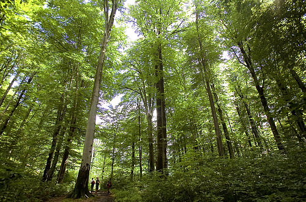
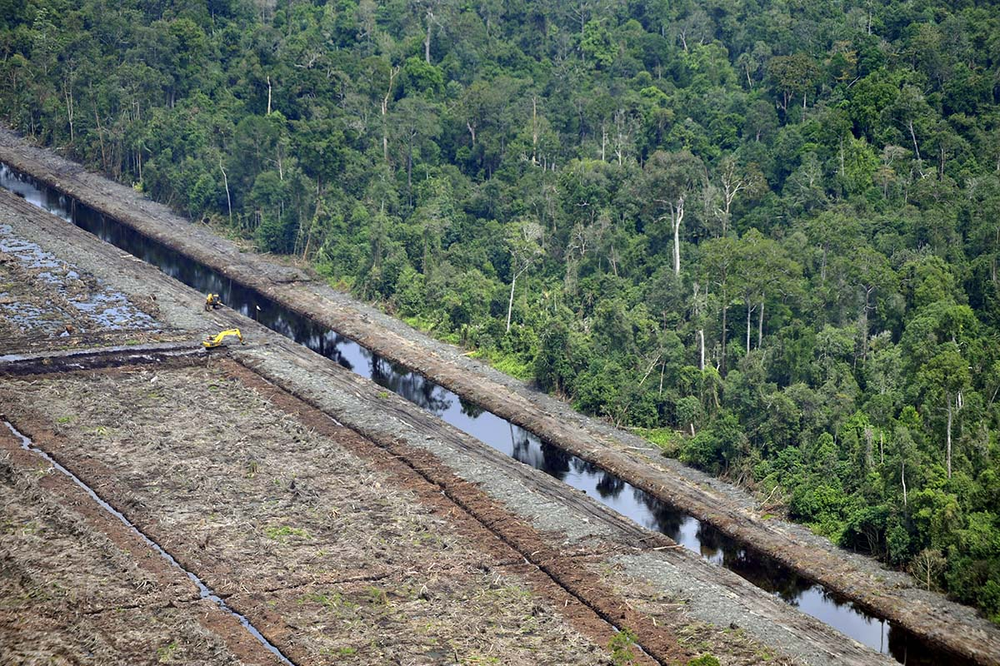

Why is Forest so Important for us?
We depend on forests for our survival, from the air we breathe to the wood we use. Besides providing habitats for animals and livelihoods for humans, forests also offer watershed protection, prevent soil erosion and mitigate climate change. Yet, despite our dependence on forests, we are still allowing them to disappear.
Tropical RainForest as Our Ecosystem
 The tropical rainforest is earth’s most complex biome in terms of both structure and species diversity. It occurs under optimal growing conditions: abundant precipitation and year round warmth. There is no annual rhythm to the forest; rather each species has evolved its own flowering and fruiting seasons. Sunlight is a major limiting factor. A variety of strategies have been successful in the struggle to reach light or to adapt to the low intensity of light beneath the canopy.
The tropical rainforest is earth’s most complex biome in terms of both structure and species diversity. It occurs under optimal growing conditions: abundant precipitation and year round warmth. There is no annual rhythm to the forest; rather each species has evolved its own flowering and fruiting seasons. Sunlight is a major limiting factor. A variety of strategies have been successful in the struggle to reach light or to adapt to the low intensity of light beneath the canopy.
Forest in the ASEAN, in Detail
The Association of South-East Asian Nations (ASEAN) is a regional cooperation organization composed of ten countries from the South-East Asian region, which have been experiencing rapid economic development. The region is situated in a tropical zone, and has the capacity to produce large quantities of biomass all year round. Woody biomass from forests constitutes a particularly valuable source of energy in the form of domestic fuel for local residents.
Forest fires, Why and How Does It Happen?
 Uncontrolled blazes spurred by weather, wind, and dry underbrush, wildfires can burn millions of acres of land at rapid speeds and can consume everything—trees, homes, even humans—in their paths. These rolling flames travel up to 14 miles an hour, which converts to about a four-minute mile pace, and can overtake the average human in minutes.
Uncontrolled blazes spurred by weather, wind, and dry underbrush, wildfires can burn millions of acres of land at rapid speeds and can consume everything—trees, homes, even humans—in their paths. These rolling flames travel up to 14 miles an hour, which converts to about a four-minute mile pace, and can overtake the average human in minutes.
Illegal Logging
 An overview of the current state of illegal logging in Southeast Asia, a critical international hotspot of biodiversity. As demand for timber increases, the absence of effective policing and rule of law mechanisms to enforce the legality and sustainability of timber extraction and biodiversity protection poses unprecedented threats to forest ecosystems and global warming mitigation.
An overview of the current state of illegal logging in Southeast Asia, a critical international hotspot of biodiversity. As demand for timber increases, the absence of effective policing and rule of law mechanisms to enforce the legality and sustainability of timber extraction and biodiversity protection poses unprecedented threats to forest ecosystems and global warming mitigation.